Bring the sea creatures into battle.
Ten forms · 84 animation profiles · Four projectile/impact sets · One consolidated implementation handoff
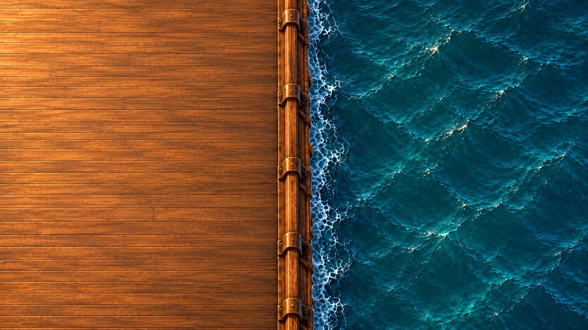
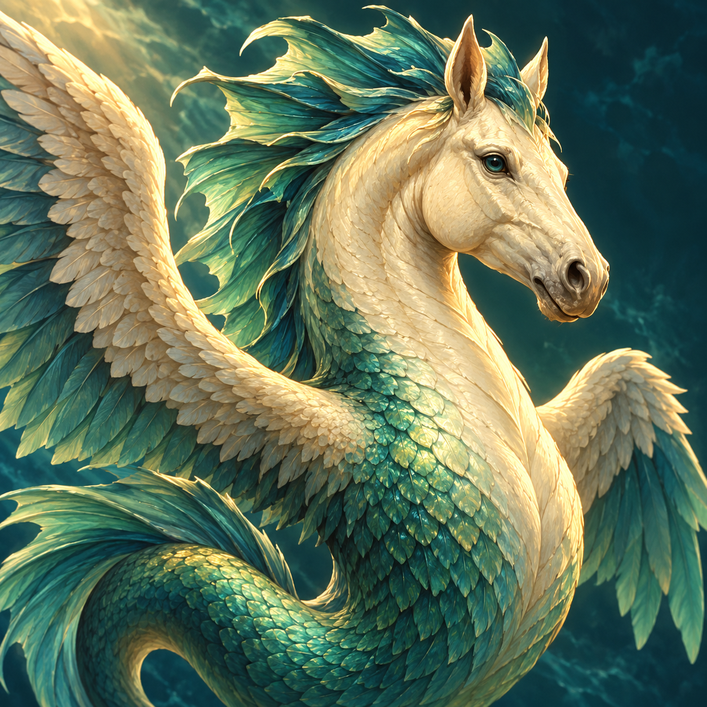
Hippocampus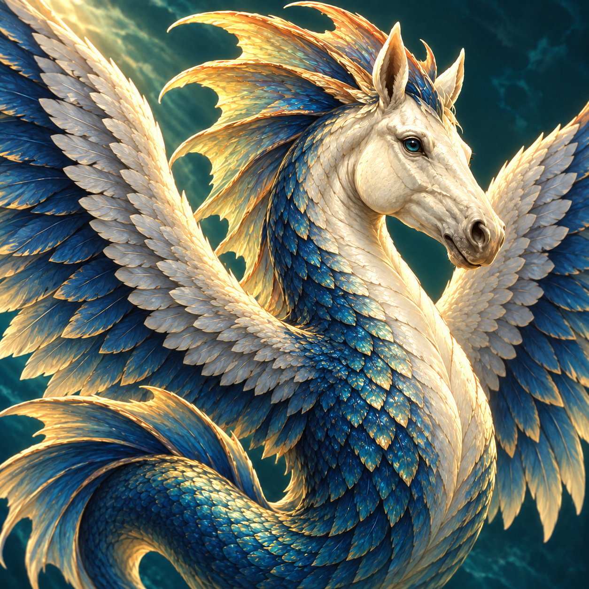
Tempest Hippocampus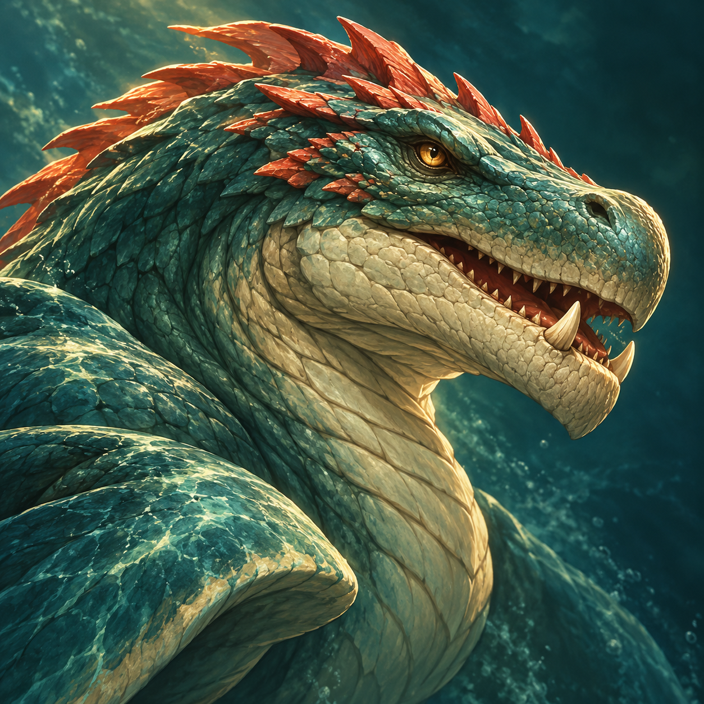
Cetus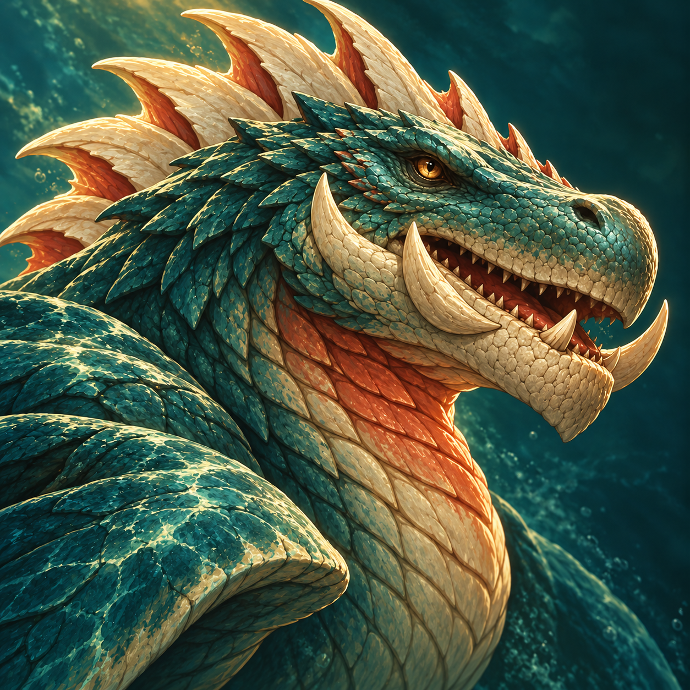
Crownfin Cetus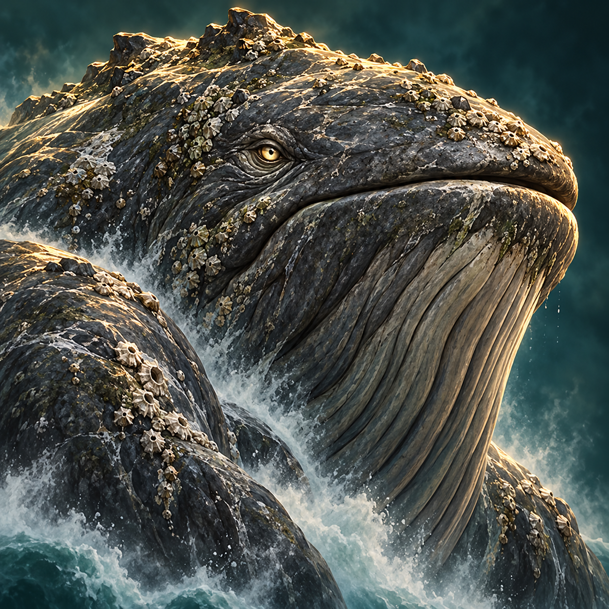
Hafgufa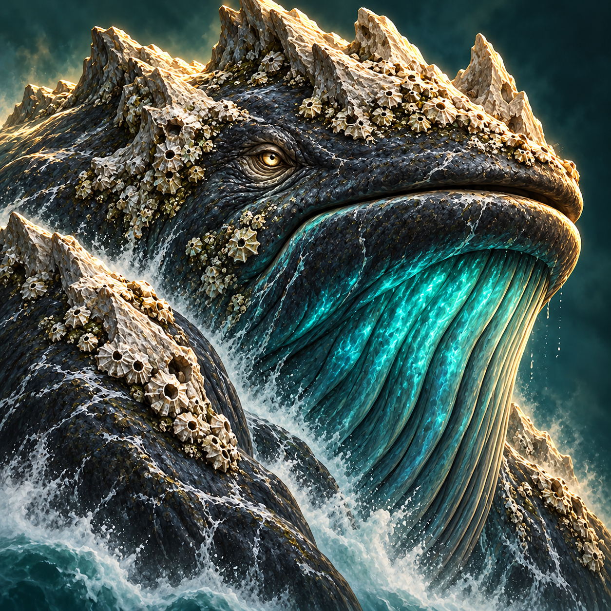
Abyssal Hafgufa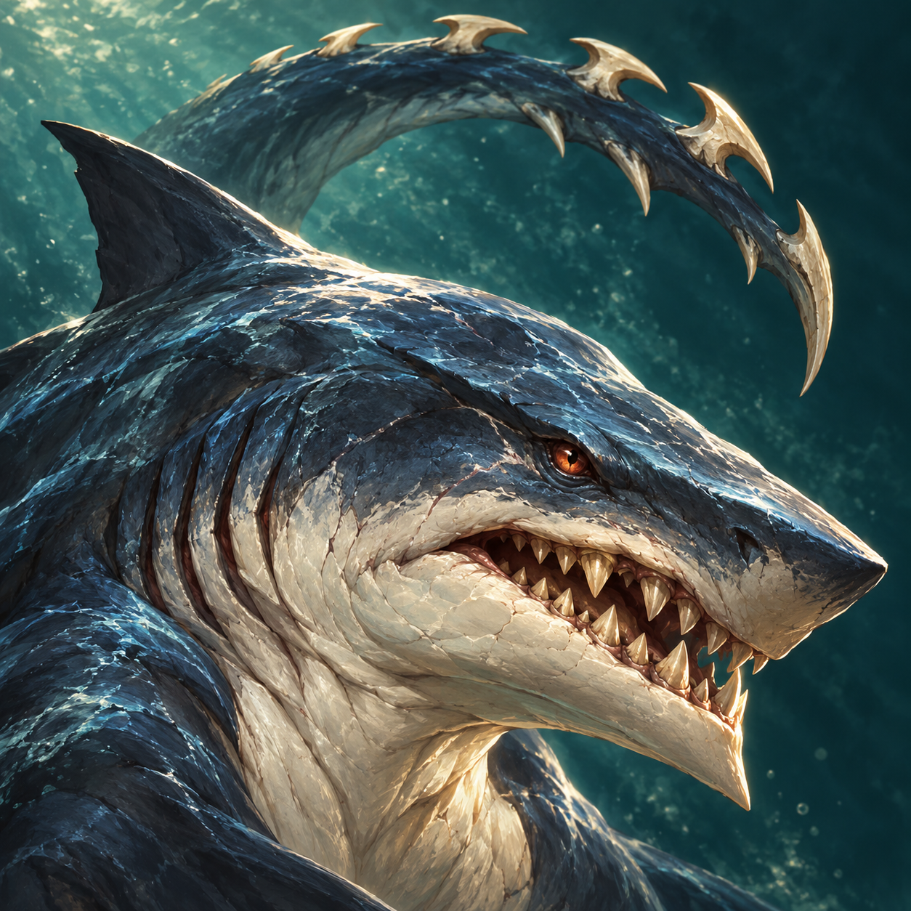
Isonade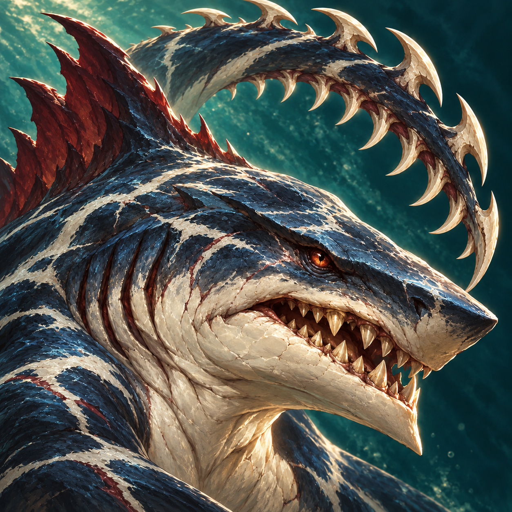
Razorwake Isonade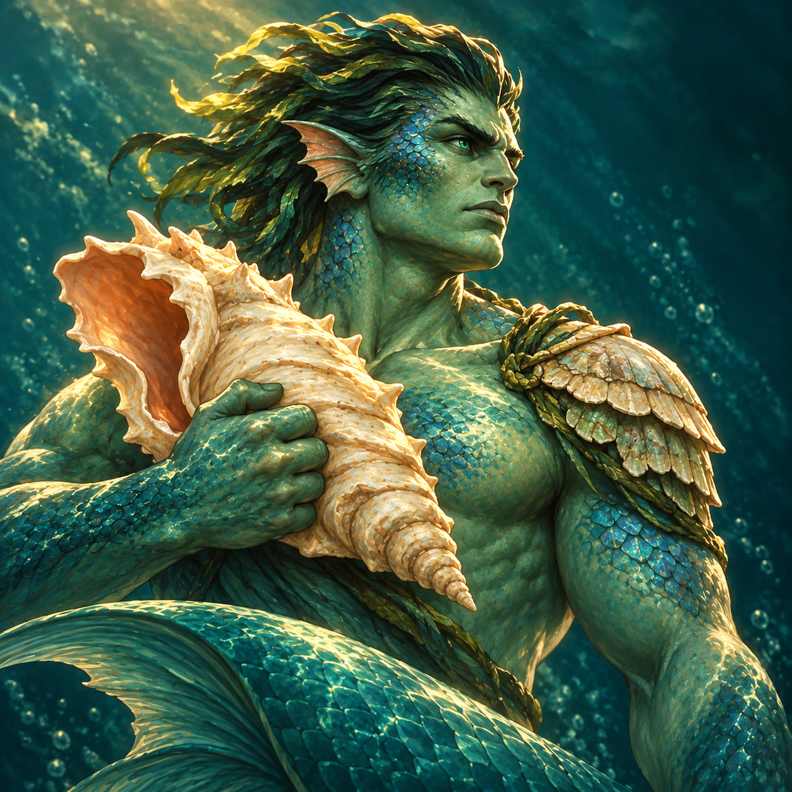
Triton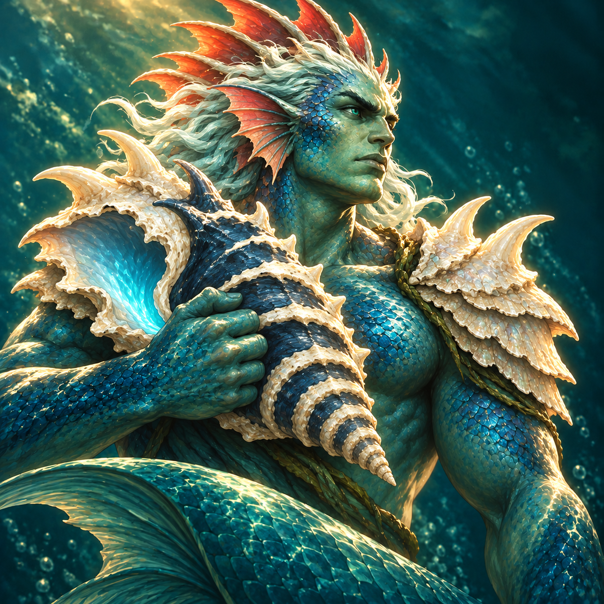
Stormcaller TritonAnimation coverage
| Creature | Proposed content ID | Supplied states |
|---|
| Hippocampus | hippocampus | idle, move, attack, hit, defend, death, victory, takeoff, fly, landing |
| Tempest Hippocampus | tempest_hippocampus | idle, move, attack, hit, defend, death, victory, takeoff, fly, landing |
| Cetus | cetus | idle, move, attack, hit, defend, death, victory, shoot |
| Crownfin Cetus | crownfin_cetus | idle, move, attack, hit, defend, death, victory, shoot |
| Hafgufa | hafgufa | idle, move, attack, hit, defend, death, victory, shoot |
| Abyssal Hafgufa | abyssal_hafgufa | idle, move, attack, hit, defend, death, victory, shoot |
| Isonade | isonade | idle, move, attack, hit, defend, death, victory, shoot |
| Razorwake Isonade | razorwake_isonade | idle, move, attack, hit, defend, death, victory, shoot |
| Triton | triton | idle, move, attack, hit, defend, death, victory, shoot |
| Stormcaller Triton | stormcaller_triton | idle, move, attack, hit, defend, death, victory, shoot |
PANTHEON REALMS — COMPLETE SEA-CREATURE ANIMATION & BATTLE HANDOFF
17 October 2026 | Consolidated delivery | Read this handoff first
Implement the five neutral sea-creature families, their base and upgraded portraits and animated battle sprites, the four attack/impact effects, and the revised single-ship sea encounter. This package supersedes the earlier portrait-only delivery. All game code was read-only during asset preparation; the feature is not yet integrated or playtested in the game.
1. COPY BETWEEN THE TWO PROJECTS
SOURCE PACKAGE:
C:\Users\lazeb\Desktop\blannder_models\sea-creatures-complete-2026-10-17
TARGET GAME:
C:\Users\lazeb\Desktop\pantheon_realms
Copy the CONTENTS of:
C:\Users\lazeb\Desktop\blannder_models\sea-creatures-complete-2026-10-17\assets
into:
C:\Users\lazeb\Desktop\pantheon_realms\assets-runtime\sea-creatures-v1
Preserve the animations subfolder. Result examples:
C:\Users\lazeb\Desktop\pantheon_realms\assets-runtime\sea-creatures-v1\single-ship-battlefield.png
C:\Users\lazeb\Desktop\pantheon_realms\assets-runtime\sea-creatures-v1\triton-upgraded.png
C:\Users\lazeb\Desktop\pantheon_realms\assets-runtime\sea-creatures-v1\animations\triton-upgraded-core.png
Keep the whole source delivery and its design/manifest data under:
C:\Users\lazeb\Desktop\pantheon_realms\assets-source\art\sea-creatures-v1
Use asset-manifest.json for exact filenames, native sizes and SHA-256 checks. Use runtime asset keys beginning sea-creatures-v1/ through the game's normal asset resolver. Never import from blannder_models, .codex, generated_images, or another user's desktop. Source and game are different projects; referencing the source without copying is not integration. If the destination already exists, compare hashes and existing registry use before replacing files.
Open index.html directly for the animated preview. battlefield-preview.html contains the terrain/footprint and portrait reference. Both work without a framework, build or server.
2. WHAT IS INCLUDED
37 native PNG assets:
• 22 transparent creature atlases, each 1254 × 1254, covering 10 forms.
• 4 transparent projectile/impact atlases, each 1774 × 887.
• 10 opaque portraits, each 1254 × 1254.
• 1 opaque battlefield, 1672 × 941: left half deck, central rail, right half sea.
84 animation profiles, containing 335 frame entries in total. This counts referenced poses, including deliberate reuse; it does not mean 335 unique hand-drawn frames. All are short 2D sprite pose sequences, generally four poses each, not 3D rigs, skeletal animation, video files, or smooth high-frame-count animation.
Every form has idle, move, attack, defend, hit, death and victory. The eight swimming forms also have shoot. Both Hippocampus forms have takeoff, fly and landing instead of shoot. No cast/ability clips are claimed. Ship movement animations and the older two-ship boarding mode are outside this package.
The generator's native RGBA pixels were preserved. No code retouching, background removal or upscaling was performed. Source rectangles, anchors, mirroring, scale and runtime fade/translation are rendering metadata. Do not remove alpha, chroma-key green pixels, flatten atlases onto black or resize them without also rebuilding the coordinates. Hidden RGB in fully transparent pixels is not a visible background.
This is native-resolution art: the battlefield is below 1920 × 1080. Use contain/letterboxing, never stretch/crop the battlefield independently of its grid. Portraits are for encyclopedia, inspection, encounter cards and upgrade comparison; use the transparent sprites in combat. Keep visible upgrade indicators and accessible names even though the upgraded silhouettes differ.
Important supplied files:
• sprite-manifest-merge.json — partial keyed entries for the existing sprite registry, NOT a replacement for the whole registry.
• animation-events.json — cosmetic contact/release timing, hover/death behavior and FX orientation.
• animation-manifest.json — preview data linking forms, portraits and sprite definitions.
• asset-manifest.json — all 37 deliverable images and their hashes.
• design/battlefield-layout.json — 16 × 11 board, terrain, normalized centers and projection.
• design/sea-creature-roster.json — movement, footprints, proposed range and renewable-ammo rules.
• design/frame-review.json — measured native rectangles, excluded pose and deliberate landing reuse.
• design/validation.json and design/browser-validation.json — package checks, not game integration certification.
• generation-prompts.json and reference/portrait-and-battlefield-prompts.json — generation prompts/provenance. Built-in image_gen was used.
Do not restore Abtu & Ant or the older full-ship picture. The two-fish family was rejected and is replaced by Triton / Stormcaller Triton. Deprecate old encounter references deliberately and retain save migrations; do not blindly delete unrelated data. Preserve old layouts for battles already in progress or explicitly migrate and validate placements.
3. FIVE NEUTRAL CREATURE FAMILIES
All are neutral in gameplay. Mythological origin is descriptive lore, not faction recruitment ownership. Names of upgraded forms and attacks below are fictional game adaptations.
Hippocampus → Tempest Hippocampus (Greek)
• Both forms: flying, one hex, melee. Can travel across occupied cells under normal flight rules and finish on an empty legal deck or water cell. Over water it visibly hovers; it never stands on the sea.
• Base: ivory horse face, teal fins, compact feathered wings.
• Upgrade: large wing fan, tall golden fin crest and cobalt scales.
• Flight is intrinsic in both forms; do not reserve flight for the upgraded form. Winged hippocamps have ancient visual precedent.
Cetus → Crownfin Cetus (Greek)
• Both forms: swimmer, two hexes; Brine Jet, proposed range 8 → 9.
• Base: short red crest and small tusks. Upgrade: five tall ivory fins and prominent curved cheek tusks.
• Direct damage from water; no boarding required. An optional brief splash visual must not imply an unimplemented area attack.
Hafgufa → Abyssal Hafgufa (Norse maritime tradition)
• Both forms: swimmer, two hexes; Deepwater Blast, proposed range 9 → 10.
• Base: round whale-like grey head and barnacles. Upgrade: pale crag crown, dark hide and luminous turquoise throat.
• Use primarily as a rare encounter boss. Its legendary size is represented visually, not by filling half the battlefield or blocking all water paths. Maximum logical footprint is two hexes.
Isonade → Razorwake Isonade (Japanese folklore)
• Both forms: swimmer, two hexes; Barbed Spray, proposed range 8 → 9.
• Base: shark-like head and hooked tail. Upgrade: high red dorsal sail and double rows of ivory tail barbs.
• A short slow effect is a possible later balance addition. Do not add dragging enemies off the deck or instant drowning.
Triton → Stormcaller Triton (Greek Tritones)
• Replaces Abtu & Ant in this revised roster. A single fish-tailed sea warrior, not a pair of fish or the unique named god Triton himself.
• Both forms: swimmer, one hex; Conch Blast, proposed range 9 → 10. Repeatable direct damage, not a support-only ability.
• Base: jade scales, dark kelp hair, ivory conch and compact shell guard.
• Upgrade: tall red dorsal fin crest, white hair, expanded shell pauldrons and a glowing indigo conch. Silhouette changes supplement the color changes.
• The conch attack is a fictional game adaptation of the mythological shell-bearing Tritones. No new hero or patron god is introduced.
Canonical proposal data is in design\sea-creature-roster.json. Check the actual content catalog for IDs before adding records. Map existing IDs if these creatures have already been introduced; do not create duplicate families. Preserve existing balance values where available. HP, attack, defense, damage, speed, costs and growth are deliberately not invented in this art package.
4. LAYOUT AND MOVEMENT CONTRACT
New layout ID: single_ship_sea_encounter_v2. Keep separate from the previous two-ship boarding layout boarding_two_ships_v1. This new encounter has no second ship, gangplank, land, catapult, destructible gate or hull HP. The ship is terrain, not a target that sinks during battle.
design\battlefield-layout.json defines 16 columns × 11 rows, odd-r offset hex coordinates. Columns 0–7 are deck (88 cells); columns 8–15 are water (88 cells). The grid occupies equal-width usable regions of the enlarged deck and the sea. The central railing and the outer image margins are outside playable cells.
Presentation uses a piecewise projection: both halves use almost equal cell spacing, with a clear unoccupied gap around the central rail. This is not a whole-image regular grid. Use each supplied cell's normalized center, width and height. The preview shows the exact hex polygon construction. Hit-test those polygons after the contain/letterbox transform; do not choose the nearest cell for a click on the railing or outside the board. Logical distance and adjacency use odd-r hex coordinates, never screen-pixel distance. Readability and sprite scale should be tested on both zones; do not stretch two-hex creature art across the visual gap.
Movement and placement:
• Ground: every footprint cell must be deck.
• Swim: every footprint cell must be water. This requires an explicit aquatic trait, not merely a name, visual theme or neutral faction.
• Fly: every footprint cell may be deck or water. Water endpoints mean hovering. Flight may cross the railing and occupied cells, but cannot end on an occupied cell.
• All two-hex footprints, including flyers, must be wholly within ONE zone, in bounds, and unoccupied. They may cross the zone boundary while moving but may not finish straddling it.
• Occupancy is shared in 2D: a flyer and swimmer cannot occupy the same cell at different heights.
• The same validator must cover move targets, deployment, summons, resurrection, teleportation, knockback, footprint rotation, AI and save restoration. Reject illegal placement; never silently relocate into water or kill a unit by drowning.
• If a spell would remove intrinsic flight while the unit is over water, reject that application with a clear reason. A speed debuff can still apply. Do not introduce a hidden instant-kill anti-flight interaction.
• Adjacent enemies on opposite sides of the railing can attack in melee without either stack moving into an illegal cell. Animate a short lunge/lean from the legal origin. Two-hex adjacency uses the nearest occupied cells. Railing is not a wall or line-of-sight blocker.
Deployment: seven two-hex stacks fit on each side. Ship anchors are (1,1)…(1,7), extending to column 0. Sea anchors are (14,1)…(14,7), extending to column 15. One-hex stacks use the anchor. Face units toward the opponent. Bind shipSide to the actual sourceShipId and army: an ambushed ship may be the battle defender. Do not assume the attacker owns the ship or infer deployment side from a global faction index. Sea-side armies must consist entirely of swimmers or flyers.
5. ENSURE THAT BOTH SIDES CAN DEAL DAMAGE
Renewable innate shots:
Give the four swimming families a capacity of 2 shots and reset to 2 at each new battle round, including round 1. A shot consumes one shot and the unit's normal activation; no mana, gold or cooldown. Never grant an extra action when refreshing. Extra actions within the round can spend the second shot. The normal next-round refill must survive save/load. Use an explicit renewable-ammo ability, not 999 ordinary shots or globally infinite ammo for all shooters.
Water shooters can swim to the water-side rail and shoot any deck column. Proposed native ranges are above; for these innate sea attacks in THIS layout, clamp effective range to at least 8 after climate/status modifiers. Other battle modes keep ordinary range rules. The geometry check proves every deck cell is within 8 hexes of some water-edge cell; it does not prove a path through arbitrarily occupied cells. AI must move toward a reachable firing position, attack blockers when possible, or wait if temporarily blocked.
Current shooters cannot shoot while engaged with an adjacent enemy. Preserve that behavior and expose cross-rail melee as a legal alternative when adjacent to a deck enemy. Aquatic units can melee adjacent water enemies normally. Flyers can reach the deck and fight in melee. Do not give these innate attacks a permanent immunity counter that makes an entire legal opposing army unable to damage the creature.
Proposed balance safeguard — Deck Harpoon:
A melee-only ship army otherwise cannot reach swimming enemies that stay offshore. Add a weak contextual harpoon action for a stack currently on deck in this layout. It targets an enemy in water (including a flyer hovering there), never a deck enemy or structure. It replaces the stack's entire normal attack activation and has unlimited repeatable ammunition; no free hero/ship turn and no resource cost. Range 24 covers this board; ignore climate range penalties for this environmental action. If engaged with an enemy on deck, disable harpoon and offer melee instead. An enemy adjacent across the rail may be attacked with cross-rail melee or harpoon.
Starting balance suggestion: 35% of stack quantity × normal unit base damage roll, adjusted by normal attack/defense and damage reduction, minimum 1 after mitigation. Use the battle RNG and display the same min/max preview as resolution. Exclude charge, shooter melee penalties, Archery, Offense, creature-specific on-hit riders, splash and luck double-hits for this environmental attack. No retaliation to a harpoon; normal rules still govern cross-rail melee. These are proposed values, not tested balance. Add a concise tooltip explaining the low damage and full action cost. Reuse an existing appropriate arrow projectile until dedicated harpoon art exists; do not make it look like a new ship-mounted siege engine.
This gives legal damaging options and avoids ammunition deadlock. It does not guarantee victory, reachability through every temporary blockade, or completion within a finite round limit. Keep the game's explicit round-limit outcome and make it visible; do not silently sink the ship when a limit is reached. Test low-damage/high-defense matchups. Respect the existing campaign prohibition on automatic battle resolution; this art delivery must not re-enable auto-resolve.
6. ANIMATION REGISTRY AND PLAYBACK
The game API inspected was packages/presentation/src/sprites.ts in v1.4.0. Recheck the current checkout before applying changes. It already supports explicit SpriteFrameRegion entries (rect, anchor, sourceScale, sourceCell), per-state fps/loop, facing and pixelsPerHex. Its animation vocabulary includes all supplied states.
Deep-merge the creatures, effects, projectiles and projectileProfiles maps from sprite-manifest-merge.json into the existing manifest. Preserve heroes, sites, decor, obstacles, siege and every unrelated creature/effect. The supplied object has a notice and lacks required unrelated registry sections; it must NOT replace the production manifest wholesale or be passed as a complete manifest without merging/validation. Follow the existing content build/registry pipeline, rather than introducing a second competing registry.
Proposed creature IDs (map to current canonical content IDs if already present):
hippocampus → tempest_hippocampus
cetus → crownfin_cetus
hafgufa → abyssal_hafgufa
isonade → razorwake_isonade
triton → stormcaller_triton
No matching sea-family IDs were found in the inspected creature/sprite sources during preparation. That is a snapshot, not permission to duplicate records added subsequently. HP, damage, defense, speed, prices and growth still need a balance pass; preserve existing values if available. Keep these neutral creatures outside automatic pantheon town recruitment unless explicitly configured.
Rendering each frame:
1. Resolve file through assets-runtime. Use regions[frameIndex], not a uniform 4 × 4 division. The source images do not have perfectly aligned gutters; explicit rectangles are essential.
2. Draw the rect's native pixels at local offset (-anchor.x, -anchor.y). These region anchors are in native pixels relative to that rectangle; the strip-level normalized anchor is only a fallback when regions are absent.
3. Apply sourceScale, then the set's pixelsPerHex scale relative to the rendered hex size. Keep logical occupancy and art size separate; a two-hex unit remains two hexes regardless of its fin width.
4. All creature art faces right. Mirror the complete anchored sprite and attachment/socket offsets when facing left. Do not merely mirror the image while leaving the projectile socket on the other side.
5. Translate the anchored sprite along the legal path during move/fly. Changing image frames alone is not movement. The renderer never changes rules-layer coordinates or spends actions.
6. Use the explicit frames count and loop flag. Never assume every state has four frames. Loading/missing-file fallbacks should be visible in diagnostics rather than silently displaying a portrait as the final combat sprite.
Cadence: idle 3 fps; move and shoot 6; attack and hit 7; defend and landing 5; death and victory 4; takeoff 6; fly 7. These are short illustrated cycles. Keep pose-to-pose playback; do not crossfade opaque creature bodies into double silhouettes or claim interpolation creates new painted poses.
Idle, move and fly loop. Attack, shoot, defend, hit, takeoff, landing, death and victory play once. Normal hit/attack/shoot returns to idle. Defend holds its final pose while the defending status is active; victory holds its final pose until exit. Flight sequence is takeoff → travel/fly loop → landing → idle. Over water, landing means settling into a low hover, never standing on the sea. Intrinsic flyers hover around 0.12 hex high at idle and 0.4 during travel; height is purely visual.
Death holds its final pose. Over water only, optionally sink the visual by 0.12 hex and fade it over 450 ms after the final pose; do not change battle death resolution. On deck, hold the final pose under the existing corpse policy. Clear defeated-unit interaction immediately according to the game state, not when the animation ends. On reload, reconstruct living/dead visuals from saved rules state without replaying damage or shots.
Contact/release indices in animation-events.json are zero-based: generally frame 2. Emit each cosmetic event at most once per action token, including when a fast frame jump skips past the release time. Killing, canceling, skipping, speeding up, tab suspension or reduced motion must never reapply the attack. Rules resolve exactly once; presentation consumes the resolved event and animates its result. Death outranks hit. Multiple projectiles/splashes do not imply multiple hits or an area attack.
Source sockets in animation-events.json are initial normalized positions within the release frame's source rect. Convert through rect anchor, scale, mirror and world transform. Calibrate visually at the game's actual battle scale for mouths, the Isonade tail tip and the Triton conch bell. The supplied socket positions are starting metadata, not hand-calibrated bone sockets. Do not compensate by moving the logical unit.
Respect prefers-reduced-motion and the game's animation-speed controls. Reduce or skip travel particles, idle bobbing and dramatic sink effects while preserving readable action indicators. Pause off-screen encyclopedia previews; do not autoplay dozens of 1254-pixel atlases in a hidden panel. Lazy-load battle families and unload/reuse texture caches through the existing asset manager.
Known art/metadata decisions (do not discard):
• Razorwake Isonade shoot uses THREE frames. Source actions row 1, column 3 touches the outer canvas edge and is excluded from playback. Keep the manifest order/count; do not restore it by assuming a regular sheet.
• Tempest Hippocampus landing uses the takeoff poses in reverse. The generated landing row repeated attack poses, so it is intentionally unused. This reuse is marked by aliasOf. The explicit regions are authoritative; aliasOf here is descriptive, not an ID to resolve recursively.
• Per-sheet sourceScale and per-frame anchors were measured from native alpha/body bounds. Minor illustrated shape/anchor variation may remain between poses. At final game scale, tune metadata if needed; do not claim these are rig-locked frames.
• Small detached generated flecks outside the main body rectangles are excluded. Use the separate FX atlases for travelling projectiles and impact bursts.
• status: final in the supplied sprite entries means final provided raster art, not that integration, balancing or in-game performance checks have passed.
7. PROJECTILES, IMPACTS AND AUDIO
Cetus / Crownfin Cetus: Brine Jet. Pale turquoise water jet, compact splash on impact.
Hafgufa / Abyssal Hafgufa: Deepwater Blast. Dark pressure sphere with foam, heavy circular water burst.
Isonade / Razorwake Isonade: Barbed Spray. Ivory hooked barbs, short chips/droplets impact.
Triton / Stormcaller Triton: Conch Blast. Pale cyan sound-pressure rings, expanding ring burst.
Each FX atlas contains four travel poses on the upper row and four impact poses below. Use the supplied native rectangles, including uneven integer sizes caused by odd image dimensions. The Isonade profile deliberately uses a static travelling pose; its four impact frames animate. Other travel sequences loop. Use supplied travelFps/impactFps 8, 220–650 ms duration range, 150 ms final impact fade, normal alpha blend and no full-screen flash. Base and upgrade share their family's effect; the body silhouettes provide the main upgrade distinction.
Critical orientation detail: Deepwater Blast was generated pointing LEFT. animation-events.json → fxOrientation.hafgufa supplies travelRotationOffsetRad = PI. Apply angleToTarget + this offset to travelling blast art. The other three use offset 0. Impact orientation stays 0; do not rotate an impact burst with the travel correction. The current ProjectileProfile type does not natively expose this correction, so extend the optional presentation metadata or add a keyed FX orientation adapter. Merely merging the registry will not apply it. The package viewer.js shows the correction in use.
Profiles use sourcePoint names mouth, tail-tip and conch-bell. Verify/extend the game's resolver for these values; don't assume every new sourcePoint is already supported. Unit IDs and effect IDs must follow any canonical ID mapping performed during integration. Keep effects in the normal alpha pipeline; additive blending can wash out ivory barbs and water foam.
Fire visual travel from the mirrored release socket to the resolved target's appropriate occupied cell, then play one impact at contact. Camera distance/hex spacing affects only presentation duration. Do not start a second rules-layer hit at impact. This package does not introduce splash damage, slow, knockback, drowning or status effects through art alone.
No new audio is included. Reuse and verify the existing game's sound registry entries where suitable. Files observed in the current game include assets-runtime/audio/sfx/magic_water.ogg and magic_holy.ogg, but filenames do not establish registry IDs; resolve current IDs before wiring them. Suggested layers: soft water push for Brine Jet, a low short pressure thump for Deepwater Blast, a subdued whistle/tick for Barbed Spray, and a short conch tone for Conch Blast. Avoid loud overlapping loops. Deck Harpoon may reuse the existing arrow projectile and a light launch sound; no dedicated harpoon sprite is included.
8. RULES, SCREEN AND SAVE INTEGRATION
Files inspected under C:\Users\lazeb\Desktop\pantheon_realms:
packages/rules/src/definitions/creatures.ts
packages/rules/src/systems/battle/common.ts
packages/rules/src/systems/battle/actions.ts
packages/rules/src/systems/battle/deployment.ts
packages/rules/src/systems/battle/geometry.ts
packages/rules/src/systems/battle/flow.ts
packages/presentation/src/sprites.ts
docs/pantheon-v0.3/content/02_animation_behavior_contract.md
Observed shooter logic requires the shooter ability AND stats.shots > 0. Initialization seeds shotsRemaining; preview/commit reject exhausted, engaged and out-of-range shots; commit spends ammunition. Effective range includes climate and nearest footprint-cell distance. Add renewable shots through definitions/schema, initialization, round transition, AI, previews and saves consistently. Animations do not make a melee-only record a legal shooter.
Add the layout-specific occupancy policy in shared rules, not CSS/client filtering. Use it for reachable cells, deployment, AI, summons, teleport, resurrection and restored saves. Add Deck Harpoon as a real contextual action sharing damage preview and execution, not a visual button that bypasses normal activation. Existing land battles, sieges and two-ship boarding must keep their previous policies.
Save layout ID, ship ownership/sourceShipId, shipSide, terrain policy and renewable-ammo/action state through existing versioned migrations. Reuse existing ship result/army persistence rules; a single static background does not add hull HP or sinking. Handle the ship as attacker OR defender. Keep campaign auto-resolution disabled.
Screens to update:
• Battle: background/grid alignment, legal terrain highlights, animated sprites, counters, targeting, Deck Harpoon availability/tooltip and readable action/impact effects.
• Encounter/inspection: correct base/upgraded portrait, neutral origin, footprint, flight/swim trait, ranged attack name, range and renewable-shot explanation. No technical enum text in player-facing labels.
• Encyclopedia: all ten forms, upgrade comparison and only one active animation preview at a time. Keep keyboard focus and accessible names.
• Recruitment/army UI where these neutrals are actually available: correct portraits and upgrades, with explicit rules for where aquatic armies can travel/fight. Do not allow unrestricted recruitment onto land before terrain compatibility is implemented; use sea-only encounter availability as the initial safe scope.
• Adventure sea encounter selection: choose this new layout for one ship versus compatible sea creatures. Keep existing two-ship boarding encounters separate.
Suggested implementation order: copy and validate art → merge registry/map IDs → add shared terrain/shot/action rules and migrations → connect rendering/events/FX orientation → update screens → exercise AI and campaign restrictions → run acceptance checks. Keep the feature gated until game integration checks pass, rather than enabling a partially working encounter.
9. ACCEPTANCE CHECKLIST FOR CLAUDE
ART AND PRESENTATION
• All 37 runtime URLs resolve. Hashes match source. No runtime reference points outside the game project.
• All 10 forms have their required states; each state uses explicit regions and the proper FPS/loop policy. The three-frame shot and reverse landing remain correct.
• Play every state at battle scale facing both directions. Check no chopped wings/tails, obvious pose jumping, disappearing sprites, incorrect upgrade identity or opaque boxes. Correct metadata where necessary before shipping.
• Mouth/tail/conch sockets remain attached when mirrored. Deepwater Blast flies toward its target with PI travel correction; impacts do not inherit it.
• Rules apply damage/ammo exactly once regardless of frame rate, speed changes, skips, reduced motion, hidden tabs, cancellations or save/load. Death does not return to idle.
• Background is contained with the grid projected into the same rectangle. Hover and hit tests reject the rail/margins. Test resized windows and normal desktop UI scale.
• Portraits remain readable at 48/64/96 px; upgrade state and accessible names are available without relying only on artwork.
RULES AND CONTENT
• Seven one-hex or two-hex stacks deploy per side, including ship-as-defender. Complete footprints, not just anchors, obey deck/water bounds.
• Ground stays on deck; swim stays in water; flight crosses and hovers. Shared occupancy prevents vertical stacking. Two-hex endpoints never straddle the rail.
• Summon, resurrection, teleport, rotate, push/pull/fear and anti-flight effects cannot create illegal placement or automatic drowning.
• Every base and upgrade can harm a deck unit: both Hippocampi fly; the other eight forms have repeatable ranged attacks. Renew exactly once at round start, including round 1; persist correctly without changing normal archers.
• A melee-only ship army can use Deck Harpoon against offshore swimmers, with matching preview/execution and full activation cost. Test blocked approaches, high defense, exhausted shots, climate penalties and round limits.
• Cross-rail melee keeps the attacking sprite/footprint at its legal origin; engaged shooters receive a legal alternative.
• AI selects legal attacks and useful firing positions without repeatedly attempting rejected shots or moving swimmers onto deck.
• Old saves/layouts still load, unrelated land/siege/two-ship battles behave as before, campaign auto-resolve remains unavailable, and returning army ownership is correct.
DELIVERY VALIDATION ALREADY PERFORMED
Native rectangles/anchors are within image bounds; every required state is present. The standalone Chromium preview exercised all 84 states and 335 frame entries, reported zero JavaScript errors or broken images, and no horizontal overflow at 390px width. Representative sprites and effects were visually reviewed on the supplied background. These are package checks; they do not claim in-game performance, socket calibration, AI behavior, balance or engine tests passed. Claude must report its actual test results and unresolved issues separately.
10. MYTHOLOGICAL REFERENCES
Hippocampus / winged examples:
https://www.theoi.com/Ther/Hippokampoi.html
Cetus (ketos):
https://www.theoi.com/Ther/KetosAithiopios.html
Hafgufa, medieval Norse maritime tradition:
https://en.wikipedia.org/wiki/Hafgufa
Isonade, Japanese sea yokai with a hooked/barbed tail:
https://en.wikipedia.org/wiki/Isonade
Tritones, fish-tailed sea beings associated with conch shells:
https://www.theoi.com/Pontios/Tritones.html
These sources support mythological roots. They do not establish the invented upgrade names, attack powers, recruitment rules or game balance.